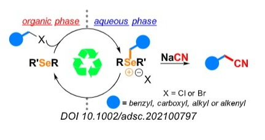
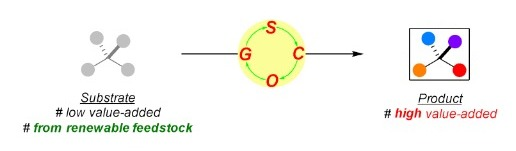
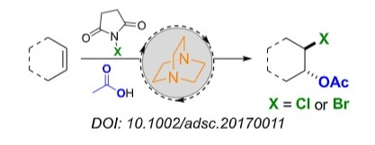
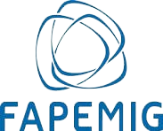
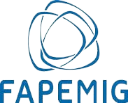

"From Waste to Products"

A atividade industrial produz grandes quantidades de rejeitos, muitos deles tóxicos para o meio ambiente e para as pessoas. No GCOLab estamos sempre buscando soluções inovadoras para solucionar esta importante questão. O objetivo da linha de pesquisa “From Waste to Products” é converter, a partir de reações orgânicas, parte desse material indesejado em produtos de interesse para a sociedade.

“Organocatalysis in Action”
Transformações químicas devem ser continuamente aprimoradas para atender as necessidades da sociedade. Neste contexto, desenvolvemos o projeto “Organocatalysis in Action” onde estudamos a preparação e aplicação de organocatalisadores para tornar possível a conversão de materiais de baixo valor comercial (preferencialmente de fontes renováveis) em produtos de alto valor agregado. Sustentabilidade é um conceito central na nossa pesquisa.
Exemplos:


Nossa pesquisa não seria possível sem o apoio financeiro das agências de fomento.

 
